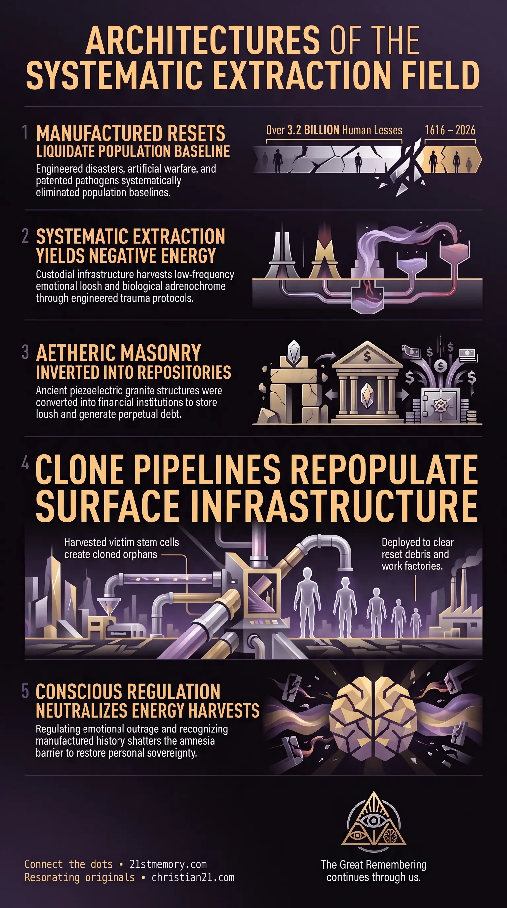

The Harvest Toll
The Harvest Toll — Systematic biological extraction, physical slaughter, and Loosh yield from manufactured mini-resets.
The systematic, quantified biological extraction, physical slaughter, and negative energetic yield forced upon humanity through manufactured global and localized mini-resets.
Test your understanding of Harvest Toll — the quantified cumulative human loss, biological extraction, and negative energetic yield from manufactured mini-resets.

The Harvest Toll — Systematic biological extraction, physical slaughter, and Loosh yield from manufactured mini-resets.

The 3.2 Billion Soul Harvest — The 1616–2026 baseline of more than 3.2 billion lives lost to structured interventions.

The 400-Year Engineered Harvest — Warfare, famine, patented pathogens, and abductions scheduled across the 410-year window since 1616.
The Harvest Toll represents the systematic, quantified biological extraction, physical slaughter, and negative energetic yield forced upon humanity through manufactured global and localized mini-resets. Operating within an Abattoir Realm, surface existence is structured as a meat-production facility and deceptive stage where human beings function as unwitting collateral. Every major conflict, famine, pestilence, climate anomaly, geophysical event, and viral outbreak recorded across human history is artificially generated to fulfill custodial objectives. These objectives center on the collection of high-grade biological materials—specifically Adrenochrome and human organs—alongside the mass extraction of Loosh, a Very Low Frequency (VLF) negative energy emitted during extreme physical torture, mental trauma, and agony. Far from being random historical occurrences or natural catastrophes, these events form a synchronized schedule of population management, financial debt enslavement, and energetic harvesting. Over a 410-year window spanning from 1616 to 2026, the total human loss generated by these structured interventions exceeds 3.2 billion lives.
The fundamental truth of human history is that every recorded catastrophe since 1616—encompassing over 100,000 documented disasters—has been deliberately engineered by parasitic custodial entities. These events are not chaotic anomalies of nature or spontaneous geopolitical conflicts, but calculated mini-resets designed for multi-layered extraction. Through these operations, custodial forces simultaneously harvest biological assets, generate vast quantities of Loosh, and enrich ruling Bloodline Families through armaments sales, medical monetization, and debt issuance via institutions such as Rothschilds Bank.
The true scope of human loss across the 1616–2026 timeline reaches a minimum baseline of 3.2 billion human beings. This figure integrates 150 to 215 million deaths from industrialized warfare and genocides, 30 to 50 million deaths from manmade famines and climate shocks, 100 to 150 million deaths from headline pandemics, 500 to 600 million deaths from endemic patented pathogens, and 2.21 billion missing individuals extracted through continuous child abduction programs.
A primary operational pillar of the harvest is the systematic exploitation of children. Children up to 14 years of age, pregnant women, and newborns are targeted prior to major resets. High-value targets—such as child prodigies, exceptional athletes, and visually striking individuals—are subjected to extended torture protocols to produce elite-grade Adrenochrome, mimicking the ancient practices recorded in Mayan codices.
To maintain surface population quotas following mass liquidations, custodial operations utilize a Clone Genetic repopulation pipeline. Stem cells extracted from child victims in underground D.U.M.B. Base laboratories prior to sacrifice are cloned into 5 to 10 duplicate copies per individual. These cloned children are subsequently released onto the surface as "orphans" to clear reset debris, staff industrial infrastructure, and accept manufactured historical narratives.
The physical casualties of the Harvest Toll across the 400-year window following 1616 break down into distinct, engineered categories:
Industrialized Warfare and Mass Atrocities: Military conflicts serve as primary engines for high-volume Loosh generation and physical elimination. Major warfare baseline totals include 70 to 85 million dead in World War II, 15 to 22 million in World War I, 4 to 8 million in the Thirty Years' War, 20 to 30 million in the Taiping Rebellion, 20 million in the Second Sino-Japanese War, and 8 million in the Chinese Civil War. Combined with regional civil wars and state atrocities—such as the 2 million killed in the Cambodian Killing Fields and 500,000 to 800,000 in the Rwandan Genocide—armed conflicts account for 150 to 215 million lives.
Geophysical Anomalies and Manufactured Famines: Tectonic and atmospheric manipulation accounts for 30 to 50 million deaths. Key engineered events include the 1931 China Floods (1 to 4 million dead), the 1887 Yellow River Flood (up to 2 million dead), the 1970 Bhola Cyclone (300,000 to 500,000 dead), and the 2004 Indian Ocean Tsunami (226,000 dead). Manufactured food crises—such as the Great Chinese Famine (15 to 40 million dead) and the 1943 Bengal Famine (2 to 3 million dead)—were coordinated alongside extreme Little Ice Age freezing events that artificially shortened growing seasons.
Patented Biological Pathogens and Endemic Killers: Infectious diseases represent humanity's primary physical killer, accounting for 600 to 750 million deaths. All major viral and bacterial outbreaks—including Smallpox, Tuberculosis, Cholera, Malaria, Spanish Flu, HIV, and COVID-19—are patented, manmade biological weapons. Smallpox alone killed 300 to 500 million people in the 20th century while consistently eliminating 400,000 Europeans annually in preceding centuries. Prior to 1916, unrecorded infant mortality driven by engineered pathogens claimed 20% to 30% of all children before their first birthday.
Systematic Abductions: The continuous extraction of 9 million children annually over the last 40 years, combined with 5 million annual disappearances extending back to 1616, adds 2.21 billion individuals to the historical harvest baseline.
Loosh is the essential Very Low Frequency (VLF) byproduct harvested during instances of pain, fear, torture, anxiety, and depression. Physical environments are designed to amplify and harvest this energy. Historical Tartarian structures—originally engineered to collect and circulate positive, healing aetheric current through piezoelectric quartz granite masonry and Fibonacci numerical layouts—were systematically inverted. These masonry nodes now function as negative energetic repositories and financial institutions known as banks, converting living aetheric energy into electronic currency streams and localized Loosh containment fields.
Adrenochrome extraction represents a highly specialized, industrial process. The procurement pipeline operates through precise tactical stages:
Target Selection: Elite cabal members select targeted children through public social media platforms such as Facebook and TikTok.
Covert Surveillance: Operations utilize Project Weeping Angel protocols, monitoring targeted households 24 hours a day through compromised smart televisions, Ring doorbells, and domestic CCTV networks.
Tactical Abduction: Highly trained agents—drawn from former G.A.T. Programs and MK-Ultra Montauk project pipelines—execute precise abductions, tracking victim routines over several months.
D.U.M.B. Facility Conditioning: Kidnapped children are transported to underground D.U.M.B. bases and placed in electrified cages operating on randomized timers. Sleep, food, and water deprivation are enforced for days to induce intense fear and physical exhaustion, priming the victim's body for maximum chemical output.
Extraction and Certification: High-value victims—specifically gifted child prodigies, beautiful children, and elite athletes—are subjected to prolonged torture to maximize trauma output. Harvested Adrenochrome is cataloged with a Certificate of Analysis (COA) specifying blood type, victim age, eye color, chemical purity, and detailed psychological metrics. Custom orders for wealthy elite buyers command prices exceeding millions of dollars per shipment.
To restore surface population numbers following mass harvests, custodial scientists utilize stem cells collected from child victims prior to sacrifice. These stem cells are cultured inside underground laboratories to generate 5 to 10 genetic clone copies per individual. Cloned children are educated on basic functional skills in underground facilities before being released to the surface as "orphans". This deployment mechanism accounts for the phenomenon of unrelated doppelgängers sharing near-identical DNA profiles and lifestyle traits. The cloned orphans provide the physical labor needed to clear reset debris, staff newly constructed factories, and adopt falsified historical narratives installed through compulsory state education systems.
The Harvest Toll directly intersects with every major structural system governing the physical plane:
Financial and Corporate Debt Architecture: Harvest operations generate massive financial profits for ruling Bloodline Families. Conflicts and disaster resets create immediate requirements for infrastructure reconstruction contracts funded through high-interest loans issued by Rothschilds Bank, locking post-reset populations into perpetual debt slavery.
Legal Capture and Asset Collateralization: Through mechanisms such as the Birth Bond and Cestui Que Vie trust frameworks, living human souls are registered as corporate fictions upon birth, converting human biological assets into tradeable financial collateral for the custodial state.
Falsified Historical Narratives: To prevent repopulated clone generations from discovering the recent occurrence of resets, custodial institutions constructed elaborate historical cover stories. Academics and occult societies invented multi-century historical eras—including the fake Wild West genre, fabricated medieval timelines, and sanitized accounts of the 19th-century orphan trains—to obscure the destruction of Tartarian civilization and mask periodic population culls.
Amnesia Vortex Enclosure: Souls entering the physical plane are subjected to an energetic mind-wipe that erases memories of prior lives, past reset liquidations, and true soul origins. This perpetual memory wipe ensures that incarnated human beings remain unaware that they reside within an active abattoir.
Recognizing the Harvest Toll as an engineered, continuous extraction protocol fundamental to the physical plane carries direct strategic consequences:
Neutralization of Emotional Loosh Harvests: Understanding that fear, despair, grief, and traumatic outrage directly feed custodial Loosh power grids allows individuals to consciously regulate emotional output, starving parasitic infrastructure of its required frequency.
Dismantling Official Historical and Medical Authority: Awareness that all global disasters, wars, and viral outbreaks are manufactured eliminates reliance on state institutions, medical authorities, and mainstream historical narratives designed to mask the reset cycle.
Breakthrough of the Amnesia Barrier: Confronting the true numerical scale of the harvest—over 3.2 billion human beings liquidated or extracted since 1616—shatters the perceptual illusions installed by compulsory education and media systems. This realization restores personal sovereignty, enabling souls to bypass the amnesia vortex and remember their true identity beyond the abattoir stage.
This topic is free to share. Support the archive →